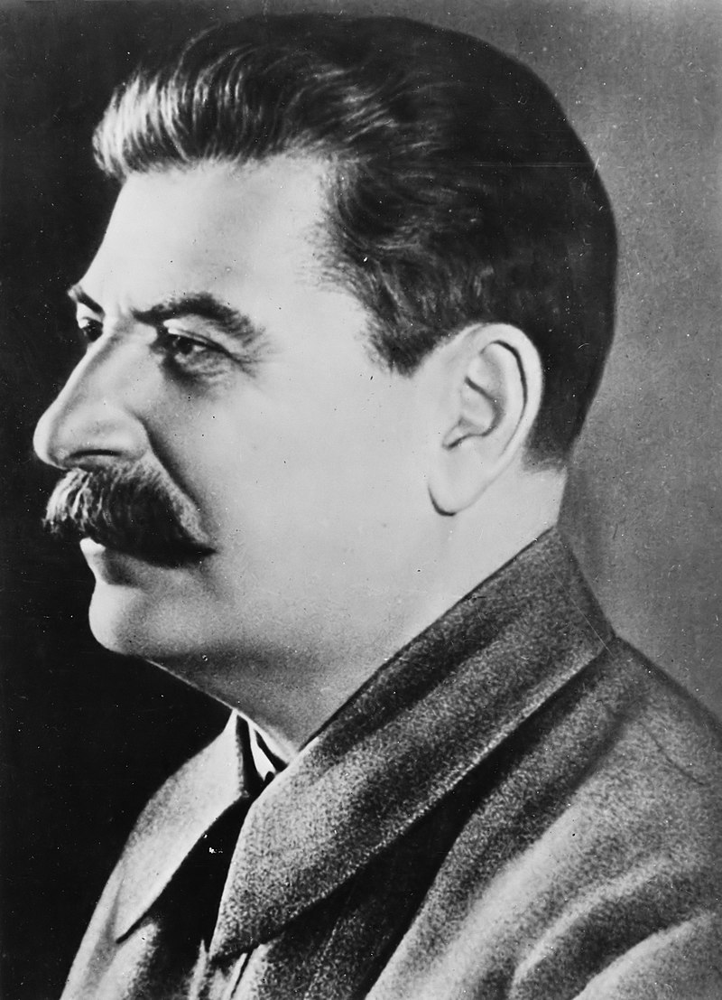

Jozef Stalin
Józef Stalin, właściwie Iosif Wissarionowicz Dżugaszwili (ros. Ио́сиф Виссарио́нович Джугашви́ли, wym. [ɪˈosʲɪf vʲɪsərʲɪˈonəvʲɪt͡ɕ d͡ʐʐʊɡɐˈʂvʲilʲɪ] Ioseb Besarionis Dze Dżughaszwili, gruz. იოსებ ბესარიონის ძე ჯუღაშვილი; ps. Stalin, Koba[a], Iwanow, Wasiljew, Czyżykow, Besoszwili; ur. 6 grudnia?/18 grudnia 1878 w Gori, zm. 5 marca 1953 w Kuncewie) – radziecki rewolucjonista bolszewicki, dyktator, polityk i zbrodniarz komunistyczny pochodzenia gruzińskiego, odpowiedzialny za śmierć milionów istnień ludzkich. Był jednym z organizatorów zbrojnego przewrotu bolszewickiego, który przeszedł do historii jako „rewolucja październikowa”. Do 1922 był członkiem Rady Komisarzy Ludowych, pełnił w niej m.in. funkcję komisarza do spraw narodowościowych. W latach 1919–1953 był członkiem Biura Politycznego KC RKP(b), następnie WKP(b) i KPZR. Przez wielu historyków jest uznawany za największego zbrodniarza w historii ludzkości
Formalnie pełnił obieralne, kadencyjne funkcje sekretarza generalnego KPZR i jej poprzedniczek oraz premiera ZSRR, faktycznie był dożywotnim dyktatorem posiadającym nieograniczoną władzę. Epoka jego rządów w ZSRR jest określana jako stalinizm.
W czasie rządów Stalina w ZSRR panował masowy, państwowy terror, który pochłonął życie 20 milionów osób, z czego 11 milionów zmarło wskutek głodu, oraz trudną do ustalenia liczbę ofiar sowieckich deportacji, zesłań i niewolniczej pracy w łagrach (zob. masowe zbrodnie komunistyczne). Stalin, zawierając pakt Ribbentrop-Mołotow z III Rzeszą, umożliwił jej dokonanie zbrojnej agresji na Polskę we wrześniu 1939, przyczyniając się do wybuchu II wojny światowej
Józef Stalin zmarł w czwartek 5 marca 1953 próbując wytrzeźwieć w saunie po długiej libacji z Nikitą Chruszczowem. Według oficjalnego komunikatu nastąpiło to o godz. 21:50. Publikowane w prasie propagandowej za agencją TASS oświadczenia podały, że w nocy 1/2 marca 1953 w swoim mieszkaniu doznał wylewu krwi do mózgu (do lewej półkuli) na tle choroby nadciśnieniowej i miażdżycy, w wyniku którego nastąpiło porażenie prawej połowy ciała i trwała utrata przytomności, wobec czego w kolejnych dniach był poddawany leczeniu. Pogrzeb odbył się w poniedziałek 9 marca 1953 o godz. 12[155]. Trumna z jego ciałem została przewieziona z Sali Kolumnowej Domu Związków na lawecie armatniej do placu Czerwonego i umieszczona w mauzoleum Lenina. W Moskwie ogłoszono żałobę na dni 6–9 marca 1953, zaś dzień pogrzebu Stalina został ogłoszony dniem żałoby narodowej w Polskiej Rzeczypospolitej Ludowej